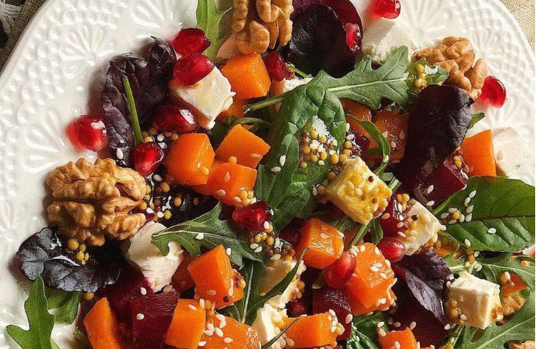

приготовление:
-
Запечь заранее свеклу и тыкву.
-
Остывшие овощи очистить, если надо,порезать и переложить в миску, добавить рукколу и фету. Посыпать грецкими орешками.
-
Для заправки смешать 1 ст. л. лимонного сока и 1 ст. л. оливкового масла, добавить соль и чёрный перец по вкусу. Полить салат заправкой и аккуратно перемешать. Посыпать семечками.